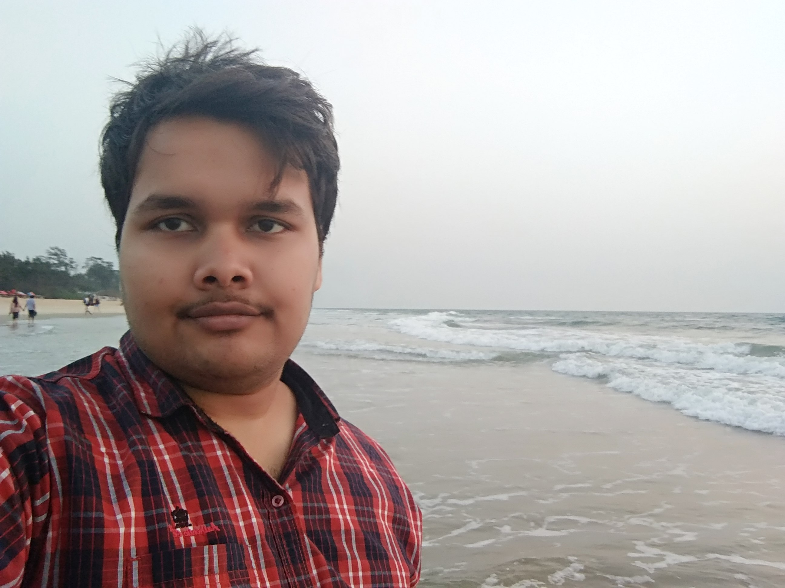

Projects
Selections from my Projects


Full Stack Developer | Data Science Enthusiast
Deployed algorithms to automate query classfication in real time from the data being transmitted by the device installed in vehicles. These devices are widely used for fleet management purposes. Being a part of IoT team worked on designing various types of accessories and services that can be equipped to the device. Analysed the data tranmitted to estimate parameters for developing algorithms for query classification.
Generated parameters for classification of B-grade bifacial cells by doing extensive analysis of data. Studied PERC (Passivated Emitter and Rear Contact) cells as well as Bifacial cells which are based on new end technology and have higher energy conversion rate.
Developed an IoT based prototype that can be used to detect the registration number of the vehicles running on the wrong side of the road. This can be used as a non-harmful alternative to tyre killers and the vehicle owner can be penalized. In this project we worked on various computer vision models for number plate recognition and character recognition.
Selections from my Projects
Life Story
I am an undergrad student pursuing B. Tech in Electrical engineering at Delhi Technological University.
I from a very young age was very curious child. In my early days when I used to go to my village during summer holidays, I was very curious about equipments and techniques used in farming. As I grew up I was always attracted by different types of machines and used to observe thier mechanisms. This way I slowly developed an interest in engineering.
I also found that engineering was one of the most common career choices and so I had to face tough competition to get into the premium emgineering institutions. I therefore cracked JEE MAINS and JEE Advanced. During that phase I got deeply interested in Physics.
When I got into Delhi Technological University, it felt like an achievement and I was excited to explore as much as I could. Being in electrical major I studied core electrical and electronics subjects and also tried to explore other domains of engineering. Apart from academics, in the first year of my engineering I joined The Indian Game Theory Society and learned various ways of strategic thinking. In the second year of engineering I tried to explore electrical engineering and started a project on developing a MATLAB program to develop graphical representation of PMU data. In third year I tried to explore electronics and started an IoT based "Wrong Side Vehicle Detection" project. In this project I learned about AI and Machine Learning and after completion of this project I started "Neural Machine Translation" as a project and also took few online courses to gain extensive knolwdge of Machine Learning and Deep Learning. During the development of these projects I felt the requirement of programming skills. Therefore, in fourth year of engineering I am exploring programming skills, I enjoy giving contests on Codechef and Codeforces and I surely can explore the never ending universe of programming.
From an early age I have been inspired by the questions of life like who we are? How this universe began to operate? What should I do so that when I get old I could look back and have good memories and not a regret? What governs the love and hatred that can be seen in society? So far I have just got that the best we can do is play our part to the best we can. I love reading books to get better idea on life and to get answers to my questions. I like to spend time with my family and friends.